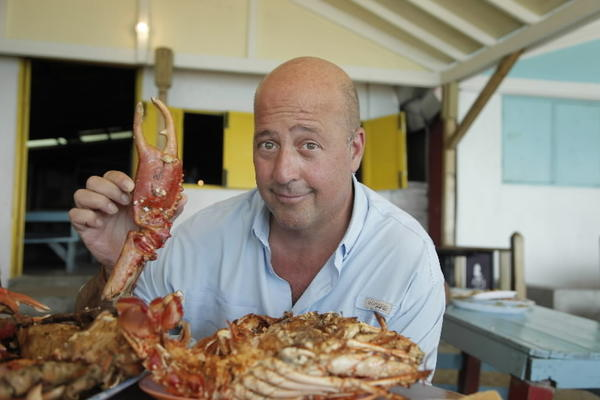
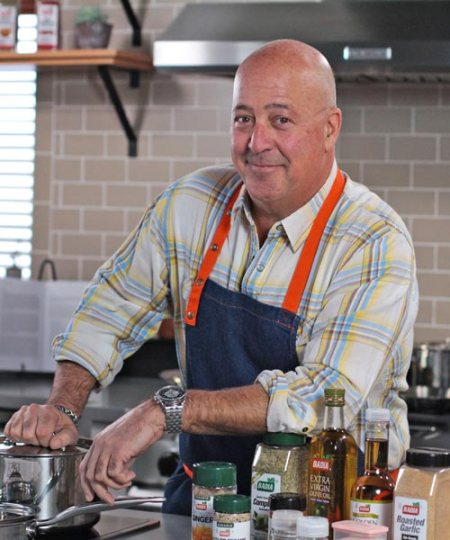
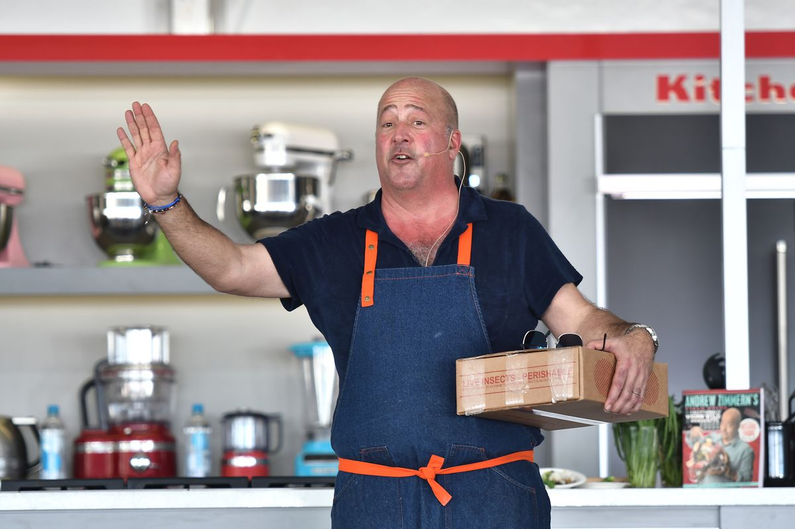

- 
Chef Andrew Zimmern slams Chesapeake Hyatt
Monument Live Launches Exclusive Discussion ...
Launderette & Chef Andrew Zimmern Announce
Celebrity-chef-Andrew-Zimmern - Cayman Compass
- 
Badia Spices Teams Up With Award-Winning ...
Chef Andrew Zimmern: Experiencing Food, Sharing ...
Chef Andrew Zimmern: Experiencing Food, Sharing ...
Worldwise: Chef and TV Host Andrew Zimmern, an Advocate for Restaurants ...
Celebrity chef and Twin Cities native Andrew Zimmern ...
Chef Andrew Zimmern shares tips for a downsized Thanksgiving
Celebrity Chef Andrew Zimmern Partners on Chattahoochee ...
Celebrating Culinary Explorations With Chef Andrew Zimmern – Forbes ...
- 
Celebrity Chef Andrew Zimmern Finds ‘Smoked Fish Heaven’ at ...
Chef Andrew Zimmern Talks About the Future of Food
Andrew Zimmern & Other Sober Chefs Talk Recovery ...
Andrew Zimmern | Andrew zimmern, Andrew, Evil words